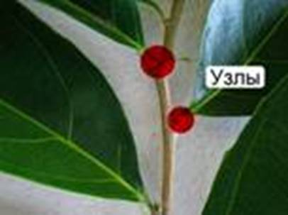
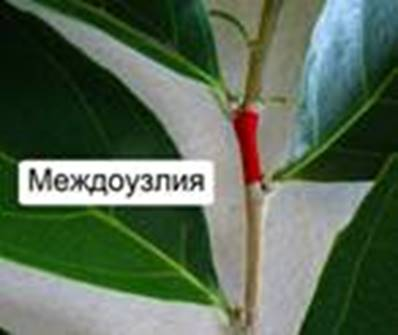
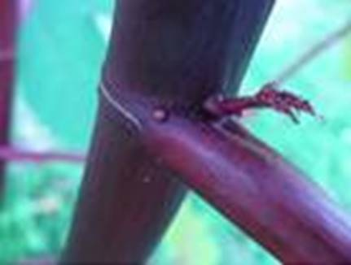
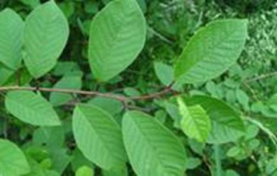
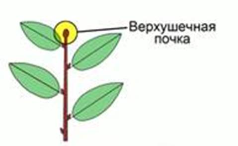
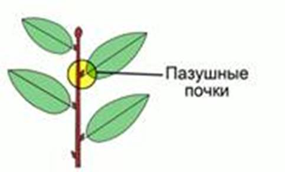
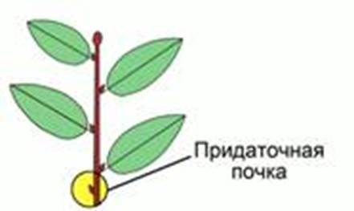
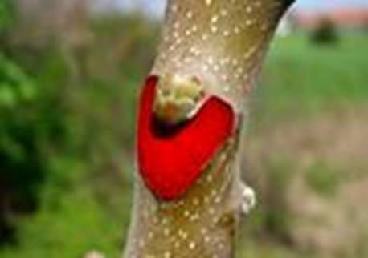
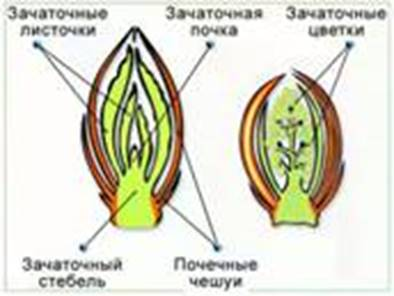
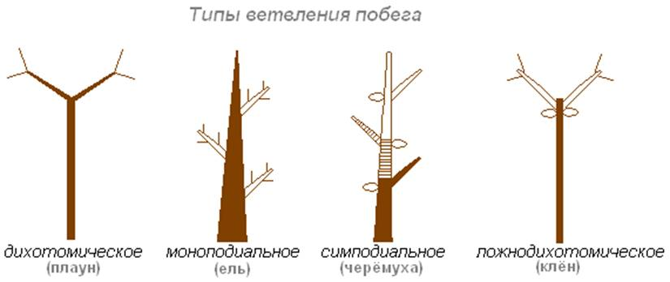

Побег – наземный вегетативный орган растения, стебель с расположенными на нем листьями и почками.
Стебель – осевой орган растения.
Листья – боковые органы растения.
У мхов нет настоящих стеблей и листьев, а только сходные с ними органы. Поэтому понятие побега ко мхам неприменимо.
У спорофитов, плаунов и хвощей листья имеют отличное от папоротников и семенных происхождение. Но их надземные части также называют побегами.
К гаметофитам плаунов, хвощей и папоротников понятие побега не применяется.
Узлы (см. Рис. 1) – участки стеблей, к которым прикрепляются черешки листьев.

Рис. 1. Узлы
Междоузлия (см. Рис. 2) – участки стебля между 2 ближайшими узлами одного побега.

Рис. 2. Междоузлие
Типы побегов:
· С длинными междоузлиями – растут быстро.
· С короткими междоузлиями – растут медленно.
Пазуха листа (см. Рис. 3) – угол между листом и находящимся выше междоузлием.

Рис. 3. Пазуха листа
Очередное (спиральное) листорасположение (см. Рис. 4) – расположение, при котором листья растут по одному в узле и располагаются на стебле поочередно по спирали (береза, ива). Листья минимально затеняют друг друга.

Рис. 4. Очередное месторасположение у черемухи
Супротивное листорасположение – из одного узла отходит 2 листа, расположенные друг напротив друга (сирень, гвоздика, мята).
Мутовчатое листорасположение (см. Рис. 5) – из одного узла отходят 3 и более листа (вороний глаз, элодея).
Рис. 5. Мутовчатое листорасположение у подмаренника
При прорастании семени первый побег развивается из почечки зародыша семени. У многолетних растений умеренного климата каждый год из почек развиваются новые побеги.
Верхушечная почка (см. Рис. 6) – почка, расположенная на верхушке побега.

Рис. 6. Верхушечная почка
Пазушная почка (см. Рис. 7) – почка, расположенная в пазухе листа. Их расположение повторяет расположение листьев на стебле.

Рис. 7. Пазушная почка
Придаточная почка (см. Рис. 8) – почка, развивающаяся на междоузлие, листе.

Рис. 8. Придаточная почка
У тополя, березы очередное расположение почек. У сирени, жимолости, фуксии, бузины почки расположены супротивно.
После опадания листьев на побегах остаются листовые рубцы (см. Рис. 9), над которыми расположены пазушные почки.

Рис. 9. Листовой рубец (выделен красным)
Почка – зачаточный побег. Строение почки зависит от ее вида.
Строение почек и их расположение на стебле
Возьмите несколько побегов деревьев или кустарников. Рассмотрите их. Определите расположение почек. Зарисуйте.
Отделите несколько почек от стебля. Рассмотрите их наружное строение. Какие приспособления помогают зимующим почкам переносить неблагоприятные условия?
Разрежьте вегетативную почку вдоль и рассмотрите ее под лупой. С помощью рисунка (см. Рис. 10) найдите почечные чешуйки, зачаточный стебель, зачаточные листки, конус нарастания.

Рис. 10. Внутреннее строение почки
Зарисуйте вегетативную почку в разрезе и подпишите названия ее частей.
Изучите форму и внутреннее строение генеративной почки. Чем ее строение отличается от строения вегетативной почки?
Сравните строение почки и побега в целом.
Почечные чешуи – это преобразованные наружные листья. Чешуи часто пропитаны смолянистыми веществами. Это защищает почки от проникновения грибков, высыхания, температурных колебаний.
На верхушке зачаточного стебля находится конус нарастания, состоящий из клеток меристемы. На стеблях расположены зачаточные листья, в пазухах которых находятся зачаточные почки.
Развитие побегов
Проращивание зимующих побегов деревьев и кустарников. Зимой возьмите 2 побега кустарника или дерева. Поставьте 1 побег в воду, а другой – в 3% раствор сахара. Наблюдайте за распусканием почек и развитием побегов. Результаты записывайте: отмечайте время опадания почечных чешуек, распускания листьев, смерти растения.
Вегетативные почки – почки, несущие только зачаточные листья. Из них прорастают вегетативные побеги.
Генеративные почки – почки, не имеющие в себе зачаточные побеги с бутонами на конце. Крупнее вегетативных, отличаются от них по форме.
Ветвление побега
Вырастите 2 растения. По достижению ими 7-10 см в высоту, у одного отрежьте верхушку. Наблюдайте за дальнейшим ростом и развитием растений.
Обрежьте верхушку растущего побега фикуса или гибискуса. Наблюдайте за последующим ветвлением растения.
Развитие растения начинается с распускания почек. При опадании почечных чешуй скорость развития побега становится максимальной. Новые клетки образуются за счет деления клеток конуса нарастания. Удлинение побега происходит, в основном, за счет роста отдельных клеток, происходящего при увеличении их вакуолей. По мере удаления от верхушечной точки роста, способность клеток к делению ослабевает.
Вставочный рост – рост, происходящий за счет удлинения междоузлий.
Новые молодые клетки превращаются в клетки покровной, основной, проводящей или механической ткани стеблей, в зависимости от места их расположения.
При срезании верхушечной почки прекращается рост побега в длину, что приводит к развитию боковых побегов из боковых почек. Так можно регулировать форму кроны, от которой зависит урожайность плодовых деревьев.
Типы ветвления побега:
· Дихотомическое – точка роста вилкообразно делится на 2, в результате чего от оси первого порядка отходят 2 оси второго порядка
· Моноподиальное – главный стебель сохраняет верхушечную точку роста и обеспечивает рост в высоту, от него отходят побеги последующих порядков
· Симподиальное – точка роста главного побега отмирает, его рост продолжается за счет ниже расположенной боковой почки, дающей побег второго порядка, которая также отмирает, и рост продолжается из боковой почки
· Ложнодихотомическое – точка роста главного побега отмирает, его рост продолжается за счет ниже расположенных 2 боковых почек

Рис. 11. Типы ветвления побегов (Источник)
Список литературы
1. Биология. Бактерии, грибы, растения. 6 кл.: учеб. для общеобразоват. учреждений / В.В. Пасечник. – 14-е изд., стереотип. – М.: Дрофа, 2011. – 304 с.: ил.
2. Тихонова Е.Т., Романова Н.И. Биология, 6. – М.: Русское слово.
3. Исаева Т.А., Романова Н.И. Биология, 6. – М.: Русское слово.
Дополнительные рекомендованные ссылки на ресурсы сети Интернет
1. Scienceland.info (Источник).
2. Phytology.ru (Источник).
3. Activestudy.info (Источник).
Домашнее задание
1. Биология. Бактерии, грибы, растения. 6 кл.: учеб. для общеобразоват. учреждений / В.В. Пасечник. – 14-е изд., стереотип. – М.: Дрофа, 2011. – 304 с.: ил. – с. 110, задания и вопросы 7, 8 (Источник).
2. Какие существуют типы листорасположения?
3. Какие существуют типы почек по их расположению на стебле? Охарактеризуйте каждый из типов.
4. * Выберите 2 растения разных видов, растущие возле вашего дома. Опишите характерные особенности их почек. Сравните эти особенности между собой.
{kind=link}